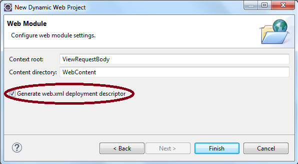

Tutorial 4. View Request Body
by Dr. Wenjie He
1. Run the example
In this tutorial, we will view the structure of a request body through a servlet. The goal of this tutorial is to help
us understand the HTTP protocol and some basic things to process data in a servlet.
You can find the source code of this example in the folder
Tutorial4_ViewRequestBody/Code. In this folder, there are
two sub-folders:
src and
WebContent. The
src folder contains the Java source files, and
WebContent contains other files for the web application.
Let us first run the example. Then we will understand the details in it.
- Start Eclipse for Java EE.
Next we create a Dynamic Web Project.
- In the Eclipse IDE, do the following steps:
File ⇒ New ⇒ Dynamic Web Project ⇒
- Type the project name: ViewRequestBody and make sure that Tomcat is selected as your Target Runtime.
Then click the Next button.
Accept the default setting and click the Next button.
- Generate the Deployment Description file for later configuration.
In the current window, by default, the Deployment Description checkbox is not selected. We need this file
to configure our welcome file. Check the checkbox.

Click the Finish button.
- A Dynamic Web Project is created in the Eclipse.
Expand the Java Resources node, the src node will hold all our Java source files.
Expand the WebContent node. This node will contain all our web resource files.
- Copy the Java source files by drag-and-drop.
The Eclipse IDE supports the drag-and-drop feature to provide the convenience for the programmers.
Go to the folder Tutorial4_ViewRequestBody/Code/src and drag the folder edu from it and drop it
onto the node src that is under the node Java Resources in the project.
- Copy the welcome file by drag-and-drop.
Go to the folder Tutorial4_ViewRequestBody/Code/WebContent and drag the file form.html from it and drop it
onto the node WebContent in the project.
Note: Do not drop it in other sub-folders, such as the WEB-INF folder.
- Configure the welcome file inside the web.xml file
Expand the node WEB-INF and double-click the file web.xml file.
Change the filename from index.html to form.html. You will see
- Now we are ready to run the project:
Rifgt-click the ViewRequestBody project node ⇒ Run As ⇒ Run on Server ⇒
You will see the page:
Select more than one sizes as follows, so that we can see how to send multiple values for the same parameter:
Click the Submit Query button, you will see the result:
2. Understand the code
In this example, there are three files:
form.html, web.xml, and
ViewRequestBody.java. Since the
configuration file
web.xml is very simple and easy to understand, we will look at the other two files.
2.1. Understand the code form.html
This file is the welcome file of this web application. It is also used to get the user's input. The user's input data
will be sent to the servlet for processing.
Code Listing: form.html
1
2
3
4
5
6
7
8
9
10
11
12
13
14
15
16
17
18
19
20
21
22
23
24
25
26
27
28
29
30
|
|
<!DOCTYPE html>
<html>
<head>
<meta charset="ISO-8859-1">
<title>Super Beer</title>
</head>
<body>
<form method="post" action="viewRequest">
Select beer characteristics<p>
Color:
<select name="color" size="1">
<option>light</option>
<option>amber</option>
<option>brown</option>
<option>dark</option>
</select>
Body:
<select name="body" size="1">
<option>light</option>
<option>medium</option>
<option>heavy</option>
</select><br /><br />
Can sizes:<p>
<input type="checkbox" name="sizes" value="12oz" />12 oz.<br />
<input type="checkbox" name="sizes" value="16oz" />16 oz.<br />
<input type="checkbox" name="sizes" value="22oz" />22 oz.<br /><br />
<input type="submit" />
</form>
</body>
</html>
|
- (Lines 8-28) This is the main part of this file. It is an HTML form that is used to send the user's data.
- (Line 8) Here we used the post method, because we want to send the data through the request body.
The get method can only send data through the request line.
- (Line 8) The value for the action attribute is viewRequest, which is the servlet URL
pattern (we will see its configuration inside the servlet using an annotation).
- (Lines 11-16) We use a dropdown list to send the parameter color. We use the value color
for the name attribute of the select element.
- (Lines 18-22) Similarly, we use another dropdown list to send the parameter body.
- (Lines 24-26) We use a list of checkboxes to send multiple values for the parameter sizes.
Notice that the three checkboxes use the same parameter name sizes. In this way, when more than one checkboxes
are checked, multiple values will be sent to the servlet under the same name sizes.
- (Line 27) When the submit button is clicked, all the data inside the form will be sent to the server,
and only the data inside this form will be sent. That means the data outside the form will not be sent to the server.
Some basic facts about the HTML forms:
- The HTML forms cannot be nested. That is, you cannot put an HTML form inside another HTML form.
- An HTML page can contain multiple HTML forms. Each form can have its own back-end processing file placed inside
the action attribute.
- When you have multiple HTML forms in an HTML page, if you click the submit button, only the current
form will be submitted to its own back-end data processing file. Data contained in other forms will be ignored.
2.2. Understand the code ViewRequestServlet.java
This is a servlet that we use to process the HTML form submitted from the welcome page
form.html.
Code Listing: ViewRequestServlet.java
1
2
3
4
5
6
7
8
9
10
11
12
13
14
15
16
17
18
19
20
21
22
23
24
25
26
27
28
29
30
31
32
33
34
35
36
37
38
39
40
41
42
43
44
45
46
|
|
package edu.umsl.java.web;
import java.io.BufferedReader;
import java.io.IOException;
import java.io.PrintWriter;
import javax.servlet.ServletException;
import javax.servlet.annotation.WebServlet;
import javax.servlet.http.HttpServlet;
import javax.servlet.http.HttpServletRequest;
import javax.servlet.http.HttpServletResponse;
@WebServlet("/viewRequest")
public class ViewRequestServlet extends HttpServlet {
private static final long serialVersionUID = 1L;
protected void doPost(HttpServletRequest request,
HttpServletResponse response) throws ServletException, IOException {
String ipaddr = request.getRemoteAddr();
String client = request.getHeader("User-Agent");
response.setContentType("text/html");
PrintWriter out = response.getWriter();
out.println(ipaddr);
out.println("<br />");
out.println(client);
out.println("<br />");
String line = null;
try {
BufferedReader reader = request.getReader();
while ((line = reader.readLine()) != null) {
out.println(line);
}
} catch (Exception e) {
e.printStackTrace();
}
out.flush();
out.close();
}
}
|
- (Line 13) This is the annotation-type servlet configuration. The URL pattern /viewRequest of
this servlet is specified in the annotation. This way of configuration is popular due to its simplicity.
- (Lines 17-18) Corresponding to the post method in the HTML form, we use the doPost method
for data processing. The servlet container prepares the HttpServletRequest object request and the
HttpServletResponse object response for this method. We just use them directly in this method.
- (Line 20) We retrieve the IP address of the user using the method getRemoteAddr(), which could be useful for some of
the applications.
- (Line 21) We retrieve the User-Agent information using the method getHeader,
so that we can get the client's OS type and the browser's type.
- (Line 23) We set the response header Content-Type as the MIME type text/html for the HTML
content. For different type of response content, we need to choose the appropriate MIME type.
- (Line 24) Since our response content is of text content, we use the PrintWriter object which is
an output stream object for text content.
- (Lines 26-29) That is the way we produce the text content in a set of string values.
- (Lines 34-38) We use a BufferedReader object to print out the message body part line by line.
- (Line 43) When the response content is sent, a buffer is used to carry part of the content. When the buffer
is full, then its content will be sent automatically; but if the buffer is not full, its content will not be sent.
Now we have completed everything, and we want to force the network to send its content immediately. So we call the
method flush to do it.
- (Line 44) The output stream object out occupies memory resource. When we do not need it any
more, we should release it, so that we can save some memory resource and make the web application faster.
==========The End==========